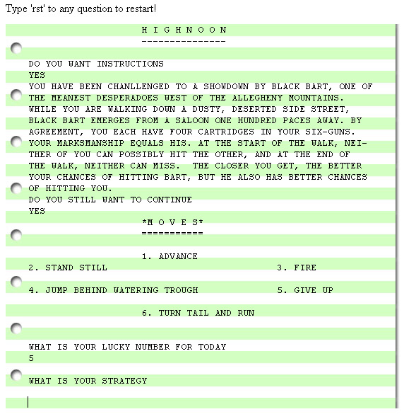
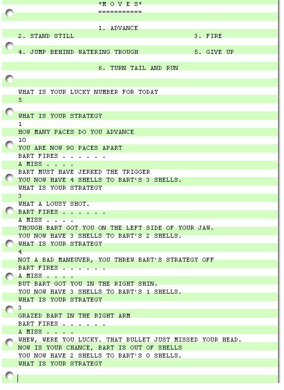
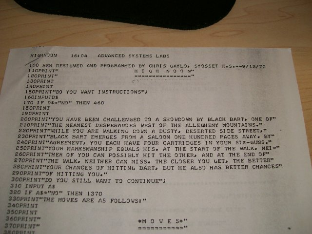
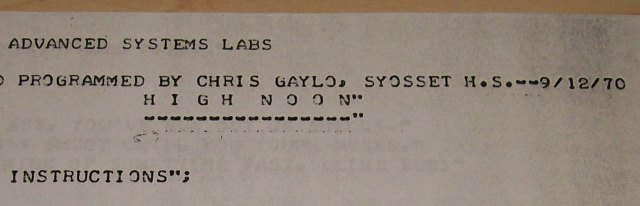
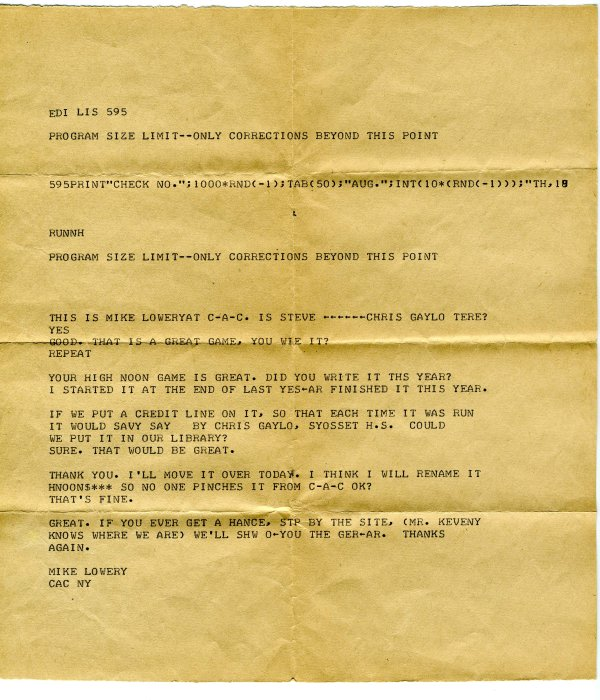

High Noon
The Huntington Project
One of the educational networks to emerge after the Dartmouth Time-Sharing System became operational was the Huntington Project. This project was established in 1967 by Ludwig Braun, who was a Polytechnic Institute of Brooklyn electrical engineering professor.
Braun believed that computers would play an important role in the future of education, so between 1967 and 1970 the Huntington Project placed computers and/or time-sharing terminals in high schools in Long Island, New York. Braun used BASIC as a key part of this initiative.
Text-Based Shootout!
One of the more interesting games to come out of this was High Noon. Programmed by Syosset High School student Christopher Gaylo in 1970, this turn-based game simulates a Wild West shootout against a computer-controlled bandit named Black Bart.
During each of his turns, the player has the option to move, shoot, or run away. The player and Bart have four shots each, and the odds of a successful hit increases the closer they get to each other, which means reducing the one hundred paces between the characters but also not getting killed while doing so. The directions spelled all this out:
Playing the game is therefore a balancing act of moving just close enough to bring down Bart before he can shoot the player.
Currently it is possible to try out the game online.
High Noon Development
Chris Gaylo recalls High Noon was written on a time-shared system leased by Syosset High School from the Call-A-Computer company — later named Advanced Systems Labs — on Long Island, New York.
The program is written in early BASIC and is less than four pages printed out. Development was all done via a teletype terminal dialed into the server with a maximum user storage of 6.4 kilobytes. Due to the limited persistent storage, other programs including High Noon were transferred to paper punch tape off the mainframe. The author still has a copy of the binary program file and an ASCII print out of the code.
Here's a photocopy of the original code as well as a close-up of the copyright:
 The PHP source code is available as is the BASIC source code.
Following are some images of the actual source code for historical accuracy.
{kind=link}
{kind=link}
{kind=link}
{kind=link}
High Noon was a popular game on the Call-A-Computer system and the compiled version was included as a system wide game by administrators. Here is a communication with Call-A-Computer just to give a little flavor to this context:
High Noon Historical Context
While a simple game, High Noon — like The Sumerian Game but unlike its later Hamurabi variant — does include brief narrative snippets to frame the action. This has the effect of introducing a small degree of storytelling into a medium that was still largely based around simulation without too much context. This makes High Noon somewhat similar to ROCKET as well.